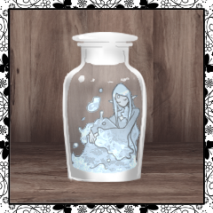
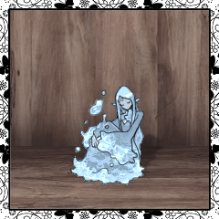
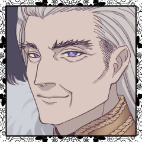
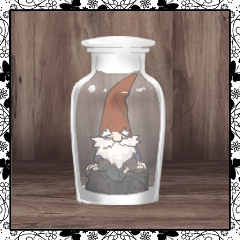
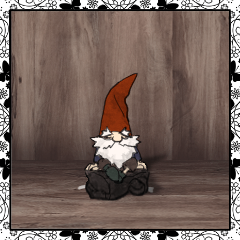

お茶会 ラウンド1
行動：セシリア
セシリア
セシリアが1手番目を取って、パンディオン抉り／水の精霊クエスト挑戦を行おうかと思います。
聖霊
2d6+2=>7 (2D6+2>=7) ＞ 3[1,2]+2 ＞ 5 ＞ 失敗
[ 聖霊 ] HP : 19 → 18
セシリア
2d6+3=>7 判定（＋愛） (2D6+3>=7) ＞ 11[6,5]+3 ＞ 14 ＞ 成功
GM
というわけで、セラに水の精霊の元へ案内されます。
セシリア
パンディオンの身の回りの世話をしている、ということだったので、不測の事態があるかもと思いながらついていきます。

水の精霊
案内された場所には、大量の瓶が並べられていました。
イーデン
街の全員が敵と思っておいた方がよくはある。
セラ
「みんな～～～～！！！！ 起きて～～～～！！！！カンカンカンカンカン！！！！ 美人連れてきたよ～～～～！！！！」
水の精霊
セラの声に精霊は反応し、瓶から顔を出します。
イーデン
数歩下がったところで無の顔で見守っています。
セシリア
とりあえず、優しく……という言葉を頭に置きながら、笑顔を浮かべて礼をします。

水の精霊
「あら、あなたすてきな金髪をしているのね」「それに綺麗な瞳」「肌もこんなに白いわ」「堕落の国でなければもっと美しかったでしょうに」
セシリア
思ったよりもたくさんいる精霊が一斉に話しているのでちょっとフリーズ気味です。
水の精霊
わらわらと集まって、セシリアの肩や頭に乗ったり、髪を触ったりしています。 すこし冷たい。
セシリア
こうして楽しそうにしている彼らも、パンディオンが命じればだれかが一月に一度命をささげることになるのだな……
水の精霊
「かわいいわね、あなた」「うつくしいわね、あなた」「わたしたち、あなたのことが好きよ」
イーデン
喜んで従うってんならもっと嬉しそうにすりゃいいのにな。殺される時も。
セシリア
「ありがとうございます。私も、あなたたちと仲良くしたいと思ってこちらに参りました」
水の精霊
「ほんとう！ すてき！」「わたしたち、きっといいお友達になれるわ」「ええ、もうわたしたちお友達よ」
セシリア
確かに、チョロいと言ってしまえばチョロいのかもしれない……
イーデン
好きな相手の情報を流してくれるんならお友達の情報も流すんだろうしな。
セシリア
信用するには値しないけれど、そういうシンプルなところは好ましく思います。
セシリア
私は動こうと思うとき、思考を回すときも何かと重たいので……
セシリア
「実は、パンディオンさんについてお話を聞かせていただきたいんです」
水の精霊
「パンディオンの！」「あらあら、噂話？」「あらあら、恋の話？」「喜んで！なんでも聞いて！」
セシリア
「ええ、彼は素敵な人という話ですけど、少し困ったところもあると伺っていて……」
セシリア
という感じで、情報を引き出していきますか。

パンディオン
救世主達から離れた場所。パンディオンは窓の外を見る。
パンディオン
自分は無条件で精霊たちより愛されるはずなのに。 そういう力を持つ救世主のはずなのに。
パンディオン
「……もっと、愛を証明するように言わねばな……」
[ パンディオン ] 精霊の愛し子 : 0 → -1
行動：イーデン
イーデン
イーデンの手番。大地の精霊との交渉を行います。
伴ってパンディオンの疵抉りを。
猟奇で判定します。
聖霊
2d6+2=>7 (2D6+2>=7) ＞ 5[4,1]+2 ＞ 7 ＞ 成功
[ 聖霊 ] HP : 18 → 17
イーデン
2D6+3+2-1>=7 猟奇で判定 (2D6+3+2-1>=7) ＞ 12[6,6]+3+2-1 ＞ 16 ＞ 成功 ＞ スペシャル
GM
PCがお茶会中の判定でスペシャルを起こした場合〔自身の所有する六ペンス／2〕までの価値の小道具を1つ入手します。
[ イーデン ] ティーセット : 2 → 1
[ イーデン ] 水パイプ : 1 → 2
GM
というわけで、次は大地の精霊の元へ向かいます。
イーデン
水の精霊ほど話が早くはないだろうな、と思っています。
イーデン
セラについて歩きながら彼を観察している。
セラ
「大地の精霊はですねー！ 頑固おやじ！という感じです！ とはいえ、彼らは現状をあんまり良くは思っていないんですよね」
セラ
観察されていることに気付いているのか、いないのか、相変わらず能天気そうにぺらぺらと喋る。
イーデン
「最初からそういう奴を寄越してくれりゃあ話が早かったんだが」
セラ
「えー！でも水の精霊チョロいし、あれからが絶対楽ですってー！」
イーデン
「喋れないようなひ弱な奴から生贄に回してんのか？」
セラ
「水の精霊は水を生み出し、大地の精霊は豊かな土壌を作る、そして何もできない精霊は、生贄役になるというわけです」
セラ
「元を正せば何かできたかもしれませんが……」
セラ
「もちろん！ なにせ僕はすごいですからね！」
セラ
「そう、精霊の数がいくらなんでも多すぎるんです」
セラ
「その秘密はふたつ。 ひとつは、大半が本物じゃない」
セラ
ランプをひっくり返すと、精霊が落ちてくる。 それに軽く息を吹きかけると、その小さな体は消えた。
セラ
「精霊の粉からは、魔法の薬が作れます。 それに、幻覚を見せられる精霊もいる」
セラ
「そういう小細工で、実際よりも多く精霊がいるように見せています」
イーデン
「……それでも、軽々と生贄に出せるだけの数はいるんだろう」
セラ
「救世主の噂を聞きつけて、裁判をしに来た救世主。 ところが戦わずに、簡単に殺せる精霊をもらってしまう」
セラ
「じゃあ、もうここに住もうか、ってなるのは自然だと思いませんか？」
セシリア
すべての人間が戦い続けることはできない。堕落の国に落ちてくる救世主は、玉石混交で千差万別だと聞く。
セラ
「さて、この街に住んだとして、コインは無事でいられるでしょうか？」
セラ
「住民や精霊が、コインを盗もうと一日中狙ってくるのに！」
セシリア
「この街自体が巨大な罠……ということですか」
イーデン
「それで、なんだ？ 種火にでもなるのか？」
セラ
「そこで、この僕、パンディオンの右腕たるセラの出番です」
セラ
「僕は、信じられると結構それができちゃうんですよ」
セラ
「そして、パンディオンは、僕が人間を精霊にできると信じている」
セラ
「どうでしょうね、石炭とかのほうが燃えるんじゃないでしょうか」
セシリア
「……しかし、あなたもまた彼を愛している、はずですよね」
セラ
「彼を愛しています。 彼の役に立ちたいと思います」
セラ
「苦痛なのかどうかは、よくわからない。 多分、喜ぶべきことです」
セラ
「でも、精霊たちは皆僕と同じことを考えている。 これはもしかして、苦痛なんじゃないかって」
セシリア
「パンディオンの心の疵がそうさせる、というわけですね」
イーデン
「よくまあ反逆できたもんだ、という話にはなるわけだ」
セラ
「愛する者が間違っているのなら、試練を与えることも時には必要です」
イーデン
「大地の精霊とやらも同じように考えてくれると助かるんだがね」
GM
そうして、大地の精霊の元に案内されます。
精霊たちは、瓶の中で眠っているようでした。

大地の精霊
水の精霊と同じように、部屋に瓶が並んでいます。
セラ
ごほん、と咳払い。
「大地の精霊たちよ、客人が来ています。 パンディオンの横暴について心を痛める善き救世主です」
大地の精霊
「何……？」「パンディオンの……」「しかし人間だぞ……」「だが、話を聞くくらいは……」「しかし……」
イーデン
「好きで人間に生まれたわけじゃあない。酌量は貰えんかね」
大地の精霊
「ムム……」「そりゃあ生まれは選べないが……」「しかし人間だぞ！」「だがなぁ……、精霊だとわしらの二の舞いだ……」
イーデン
後から精霊にされても人間嫌いになるのか……なるんだろうな……。
セラ
「皆が人間に不信感を持つのはわかります。 しかし、私や水の精霊が認めた人間です。 1度話を聞いてくれませんか？」
大地の精霊
「セラと水の精霊が？」「いや……水の精霊は誰でも認めるし……」「しかしセラもいるぞ」「いや……セラ……う～ん……」
セラ
「えっ、う～んって何！？ 僕ですよ！！ 僕の信頼！！」
イーデン
「単刀直入に言う。お前たちも人間と長話をしたくはないだろうからな」
イーデン
「俺たちはパンディオンとの裁判を考えている」
大地の精霊
「パンディオンと……！？」「裁判を……」
イーデン
「お前たちの助力が得られれば、俺たちの勝率は相当に上がるだろう。あの男はお前たち精霊に頼り切りと聞くからな」
イーデン
「お前たちの憂いる状況が引っくり返る可能性も上がるというわけだ」
大地の精霊
「まぁ……それはそうか」「我々がパンディオンの武器を管理しているし……」
イーデン
不用心すぎるな……と思いましたが言いません。
イーデン
曲がりなりにも好きな相手の不用心指摘するの、なんか、逆効果な気がするから……。
セシリア
不用心であったほうが助かりますからね。こっちは。
イーデン
支えなきゃ的なメンタル奮起されたら困る。
イーデン
「利害の一致以上のものを求めるつもりはない」
イーデン
「俺はここで裁判に負けて死ぬのはまっぴらだ。縋れるものがあるのなら藁にでも縋る」
イーデン
「お前たちも、ようやく来た好機を逃したくはないんじゃないのか」
大地の精霊
「藁とか言ったぞ」「わしらは藁なのか？」「人間がわしらを藁？」
イーデン
「お前たちにとっては、俺たちが藁だろうな」
イーデン
「拾えるものはなんであろうと拾っておいた方がいい。脆弱な人の身としてはそう思うがね」
セラ
「別に、皆にパンディオンと戦えと言っている訳ではありません」
セラ
「彼らが戦うのを、見守っていて欲しいだけなのです」
セラ
「そのために、こうやってわざわざ挨拶に来ているのです。 人間にしては丁寧ではありませんか」
イーデン
セラの助け舟に乗る形で、大地の精霊らに頭を下げます。
大地の精霊
「頭を下げた！」「頭を下げたぞ！」「あの生意気そうな小僧が！！」
大地の精霊
「人間がわしらに頭を下げた！！」「わしらに挨拶に来て頭を下げた！！」「あの生意気そうな小僧が！！」
大地の精霊
「お前の本気、伝わったぞ」「ああ、協力しようじゃないか」「そこまでの男気を見せられてはな……」
大地の精霊
「もちろんだとも！」「わしらが許すまで頭を上げないとは、なんと礼儀正しい青年か」「人間にしておくのは勿体ない」

大地の精霊
精霊たちも瓶から出てきて、小さな手を差し出します。
大地の精霊
「仲間が苦しむ今の状況をなんとかしたいとは思っておった。 協力しよう」
GM
また、 5R経過時に精鋭が戦闘から離脱します。
イーデン
やった～。了解です。裁判までに決めます。
イーデン
こんな旨味絶対忘れないから安心してください
パンディオン
大声を出しながら、屋敷の廊下を歩いている。
パンディオン
「水の精霊達はどうした！ いつもなら何も言わずともまとわりついてくるものを……」
パンディオン
「大地の精霊は、午後になってから誰も小言を言いに来ていないぞ！」
パンディオン
召使いが申し訳無さそうに頭を下げる。 彼らは末裔で、何もわかっていない。
パンディオン
彼らは精霊達ほどパンディオンの役には立たなかった。
パンディオン
「私は……私は民草のために働いているというのに……！」
[ パンディオン ] 奇跡の王 : 0 → -1
割り込み：パンディオン 1
パンディオン
＊ セシリアの心の疵『依存』を才覚で抉ります。
イーデン
Choice[猟奇,才覚,愛] (choice[猟奇,才覚,愛]) ＞ 愛
[ イーデン ] ティーセット : 1 → 0
イーデン
2d6+2=>7 判定（＋愛） (2D6+2>=7) ＞ 2[1,1]+2 ＞ 4 ＞ 失敗 ＞ ファンブル
パンディオン
わしがいうのもなんだけど……だいじょうぶ……？
GM
PCがお茶会中の判定でファンブルを起こした場合、所持している小道具を1つランダムに失います。
イーデン
もともとなかったものと思えば気は楽だが……
[ イーデン ] 水パイプ : 2 → 1
パンディオン
2d6+3=>7 判定（＋才覚） (2D6+3>=7) ＞ 6[1,5]+3 ＞ 9 ＞ 成功
セシリア
イーデンさんのHPが減り、セシリアの依存が抉れました。
[ イーデン ] HP : 18 → 17
[ セシリア ] 依存 : 0 → -1
GM
セラは精霊たちの所に案内しつつ、街の様々な様子を二人に見せた。
それは情報を渡すことが目的だが、現状を理解して欲しい、という気持ちも、どことなく感じられるものだった。
セシリア
街は栄えている。道々に灯るランプの中には弱った精霊たちが押し込められ、夜でも煌々と辺りを照らしている。
イーデン
その下、暖かそうな格好で行き交う末裔たち。
GM
街を潤す上水道、鉄を加工する鍛冶場、麦を挽く風車、そして末裔たちを温める暖炉。
セシリア
パンディオンは末裔たちを庇護し、利益をもたらしている。
セシリア
自分を愛する精霊たちを踏み台に、末裔たちから新たな愛を獲得している。そのようにも感じる。
イーデン
だが極めて過酷なこの世界において、その恩恵は紛れもない本物だ。
セラ
「末裔達は、確かに豊かな暮らしをしています」
セラ
「でも、入れ替わっているだけなんですよ。
ここでは、救世主が苦しみ、末裔が楽をします。
……パンディオンは例外ですが」
イーデン
公爵家の庇護下にあるわけでもない街の豊かさが、こうも長く存続している例をイーデンは見たことはない。
セシリア
しかし、パンディオンの脅威度は見立て通りそれほどでもない。
セシリア
恐らくはここが辺境であり、訪れる救世主が少ないことが理由のひとつだろう。
セシリア
少し強い救世主が現れて、この街を欲しがれば、すべてはおしまいだ。
セシリア
本質的には、運に任せた砂上の楼閣であろう。
イーデン
そうなった時のことを、果たしてあの男は考えているのやら。
精霊たちに任せればなんとかなるとは流石に思ってはいないだろうが。
セラ
ランプの間を、縫うように飛ぶ。
子供が石を一段飛ばしで歩くように。
イーデン
きらびやかな子どもの後ろを、言葉少なに歩く陰気な男女。
セラ
「パンディオンは、何かあった時のことを考えていないと思います」
セラ
「彼は、元の世界ではどこかの王だったそうです。 もちろん、側近とか、参謀とか、そういうのが側にいました」
イーデン
ふわふわと揺れる眩い金髪に視線を落とす。
セラ
「水の精霊はああだし、地の精霊は変化を嫌います。 風の精霊は面白くないことに興味を示さず、炎の精霊は破壊を好みます。
末裔達は何も意見を言わないし、彼の補佐ができるのは、僕くらいなんです」
イーデン
「あれの補佐ができるような精霊を生み出してやることは？」
セラ
「僕の脅威度が上がればできるかもしれませんが、今は無理ですねぇ」
イーデン
そうか、と素っ気なく返す。
この現状を維持することに関心があるのではなく、セラ本人の能力に興味を示しての問いかけであったらしい。
セシリア
人々のために働いているつもりで、それが精霊たちへの搾取であり、堕落の国らしい邪悪さに足を踏み入れていることに気が付いていない。
セシリア
そして、今やこうして信頼していたものが破滅を招いている。
イーデン
堕落の国らしい構図だ。
愚かなもの、弱きもの、運のないものが搾取される。
イーデン
斃れるのはやはり愚かで弱く運のなかった側であろう。
セシリア
救世主たちは正義を、正当性を、裁判によって証明する。
セシリア
パンディオンはその正しさを証しだてる必要さえなく、愛によって赦されてきた。
セシリア
その一方でかれは、誰の知恵も得られることなく孤独であった。
セシリア
自分がこの位置に収まっているのは、彼の言葉に端を発している。
セシリア
自分の意見を進んで言うことなく、彼の判断基準に従い、彼の判断に沿って思考することが、あの場で殺されない条件だった。
セシリア
私の判断に従うことなく、指示を与えてくれ、すべてを決めてくれるひとを求めていた。
セシリア
「いま彼が引き受けている負担は、相当のものでしょう」
セシリア
「末裔たちは頼りにならず、精霊たちも愛するばかりで考えも述べてくれない」
セシリア
私は、いまあなたに同じ負担を与えている？
セシリア
あなたが意見を求めてくれるから、あなたの役に立てているつもりでいるけれど。
セシリア
それはあなたに甘えているだけではないかしら。
セシリア
私はあなたが斃れたあとのことを、考えたく、ない。
GM
気がつくと、周囲には見晴らしのいい草原が広がっていた。
セシリア
相手へ意識を向けたまま、周囲を探る。イーデン、セラの気配を。
パンディオン
「風の精霊の力を借りて、幻を見て頂いています。 あなたと少し話がしたかったのでね」
GM
二人の気配はない。 いや、正確には、夢の中のようにぼんやりとしている。
セシリア
迂闊だった。精霊を従え、コインを奪うことさえさせているのなら、街の隅々まで彼の目が届いていると考えるのが自然だった。
パンディオン
「もう一人の彼は、話すら聞いてくれなさそうな雰囲気がありましたので。
まずは、あなたに」
パンディオン
「私は本当に、平和に暮らしたいだけなんですよ。 権力への執着もない」
パンディオン
「しかし、私一人に権力を集めすぎた。 私が倒れれば、この街は終わりだ」
パンディオン
「私は、補佐となる救世主が欲しい。 あるいは、私が補佐となってもいい」
パンディオン
「堕落の国の生活は過酷だ。 あなたも、一緒にいた彼をむやみに危険な目に合わせたくはないでしょう」
セシリア
パンディオンの言葉を、沈黙して聞いている。
セシリア
けれどパンディオンは、その過酷さをほんとうの意味では理解していないのだ。
セシリア
かれは精霊に愛され、堕落の国で課されるべき責務というものを課されてこなかった。
セシリア
穏やかな生活を維持することに腐心し、それを成してきた。
セシリア
堕落の国で、人々に愛されながらの孤独な4年は、きっと長かっただろう。
セシリア
「堕落の国の奇跡の力には、限りがあると聞きます」
セシリア
「……救世主が残りの一人にならない限りは、この世界は救われない……」
セシリア
「救済を待望して、堕落の国は今も救世主を呼び続けている」
セシリア
あたかも、堕落の国に落ちてきたばかりの救世主に対して語るように。
パンディオン
「このままもう4年、8年、16年、そしてそれ以上待っても、この世界は救われないかもしれない」
セシリア
かれは昨日まで続いていた日々が、明日も変わらず続くと信じている。
パンディオン
「明日のパンがなければ、未来のことなど考えられない
金庫に蓄えがなければ、将来のことなど考えられない」
パンディオン
「私はまず、生活基盤を整えることこそが大切だと思います」
パンディオン
「あなた達はどうするんですか？ この世界を救う、ラストアリスになると？」
セシリア
「彼がそれを聞いたら、鼻で笑うでしょうね」
セシリア
笑った。自分の醜さを真正面から見なければならない時に出る乾いた笑い。
セシリア
「私は、彼に盲目的に従いたいと思っているんです」
セシリア
疵が露出し、その下の毒々しい赤い肉が覗いている。
セシリア
「パンディオン、私はあなたの補佐になどなれません」
セシリア
「彼は明日を信じていない。彼はこの世界が救えるなどと思っていない。
この世界に絶望し、この世界を厭うている」
セシリア
「この街は精霊たちの犠牲の上に成り立っていますね」
セシリア
「それはこの堕落の国においては、それほどの悪ではないと、私は思います。
彼も、恐らくそう判断すると思います。頭では」
セシリア
「それと同時に、彼はこの街をひどく厭うている」
セシリア
「精霊に愛されているから裁判をする必要がないのだと穏やかに言いながら、犠牲を当然に他人に強いるあなた」
セシリア
「そのあなたを愛し、従う精霊たち。末裔たち」
セシリア
「でも彼はそう言わない。それをばかばかしいと思うから」
セシリア
「だから彼は、いつも──落としどころを探している」
セシリア
「ええ。私の王は、あなたではなく彼なのです」
パンディオン
「それだけの洞察力を持ちながら、思考を失い、男に従い、お飾りのように微笑むことを美徳としますか」
パンディオン
「ただ心酔した相手によりかかり、自らの責任を放棄して、甘い汁だけを啜ろうとする」
パンディオン
「賢そうな女だと思ったが……、とんだ見当違いだったようです」
セシリア
「……その通りです。残念ですが、あなたのお誘いはお受けできません」
セシリア
女は胸に手を当て、貴婦人のように礼をした。